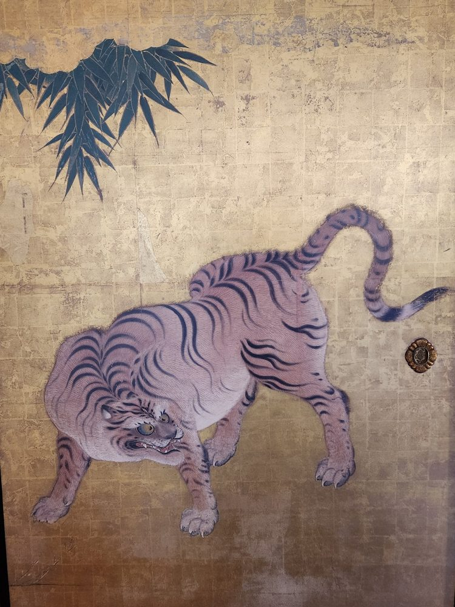

Images · pixel art · color
Re-coloring a pixel tiger
The procedural tiger keeps its geometry and animation; only its palette changes. Six passes apply one color principle each, in the order painters debug: value, temperature, chroma, mother color, then comparison with a real tiger painting. See Color lessons for the principles.
The reference


A tiger on a gold-leaf sliding door. Sampled in OKLab, it is a quieter picture than it looks: the body is a muted mauve, the stripes a deep indigo, the ground a tan gold, and the fur is about the same lightness as the ground. What separates them is hue, outline and dark stripes, not strong value contrast.
Six passes
Look at:
All passes, eight directions
Click a row to open it above. Switch the toolbar to Grayscale or Squint and compare the rows: the first row sits at the ground's value, and every later row separates from it.
Metrics by pass
Reference distance is the mean chromatic (OKLab a/b) distance, ×100, from each rendered pixel color to its nearest sampled reference color; it ignores lightness. Ground gap is the lightness difference between mid fur and the gold. Min step is the smallest lightness gap between adjacent fur shades (small means shading bands merge). Hue drift is the hue difference between darkest and lightest fur. Metrics help you notice; the grayscale and squint views decide.
What the loop taught
- Value fixed the biggest problem cheaply.The original fur sat 5 points of lightness from the ground. One pass that changed nothing but L moved it to 19 and made the shading bands legible.
- Principles can overshoot.Pass 2's temperature shift was bold (hue drift above 50°, many high-chroma pixels) and pass 3 had to pull it back. Pass 4's gold tint moved the tiger away from the painting's mauve; the reference distance rose.
- The reference corrected the guesses.Sampling showed the painter's fur has almost no hue shift: value and chroma do the modeling. Pass 5 kept our values, took hue and chroma from the painting, and the distance fell to under 1.
- Judgment stays with you.The loud amber eye was kept even though the painting's iris is duller. One saturated accent still beats fidelity here.
Reproduce or change it
Everything on this page is generated by recolor.py in this folder. It imports ../pixel-sprites/render.py and edits only cfg["palette"], so the geometry, skeleton and shading are shared with the original sprite page. Each pass is a short function over lightness, chroma and hue per ramp. The tiger's stripes are defined in tiger.json but were ignored by the renderer; render.py now draws them when render.stripes is set (off by default, so existing output is unchanged).
cd images/sprite-recolor
python3 recolor.py # needs numpy and Pillow; rewrites output/ and data.js